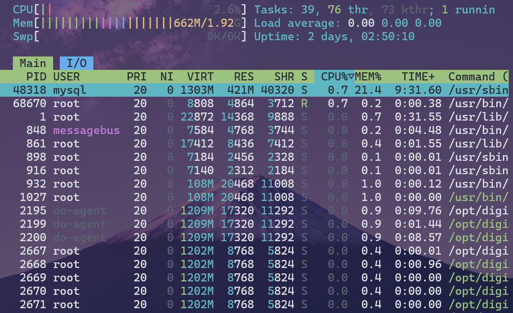
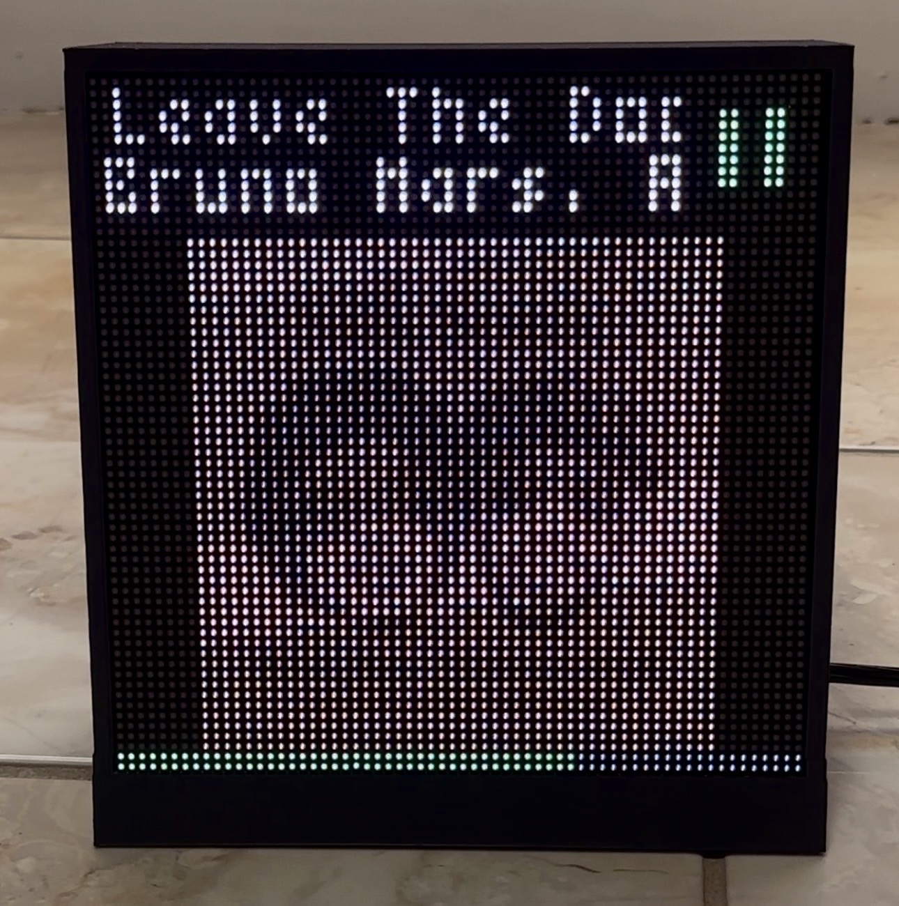
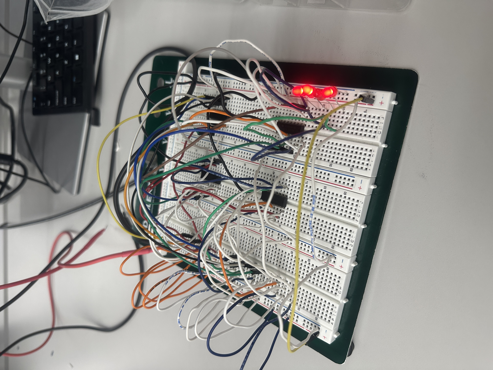

Education

Bachelor of Science in Computer Engineering
Texas A&M University
Aug. 2023 - May 2027
I gained a comprehensive understanding of both the software and hardware aspects of technology making me a well-rounded engineer capable of not only designing electrical components but creating the software to utilize them
Relevant Courses: Intro to Computer Systems, Signals and Systems, Computer Arch and Design, Program Design & Concepts, Data Structures & Algorithms, Intro to Digital System Design, Electrical Circuit Theory
Experience
Student Technician
Texas A&M University
Aug. 2025 - Dec. 2025
Selected to support instruction for foundational digital logic course using Verilog and simulation tools for ECEN 248. Assisting students during lab sessions, answering technical questions, and providing feedback on assignments. Also collaborating with the course instructor to facilitate student learning and engagement.
Skills
Technical Skills:
Linux Administration
Debugging & Testing
Circuit Analysis
Data Analysis & Visualization
Web Development
Programming Languages:
C/C++
HTML/CSS
Python
Verilog HDL
LaTeX
Bash
Tools and Frameworks:
Git
VS Code
Linux CL
Vivado
Projects

Self-Hosted Web Server
Hosted an authoritative DNS server with BIND9 and a website via Apache2 on a VPS, later migrated to Raspberry Pi 4.
Installed and configured PHP, MySQL, and WordPress on Linux CL, including file permissions, database setup, and security hardening.

Spotify Album Display
Designed and built an electronic security system using an IR emitter, photo detector, op-amps, comparator, latch, and LEDs.
Focused on circuit design, analysis, and troubleshooting with real-time testing to ensure proper reliability and performance.

Electronic Security System Design
Built a functional display system that shows currently playing Spotify tracks using a Raspberry Pi Zero and a 64x64 RGB LED matrix.
Configured the Spotify Web API to fetch currently playing track data using OAuth to display on LED panel